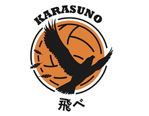

Colégio Karasuno
Os Corvos

Filosofia
A filosofia do Karasuno é a da evolução constante e da agressividade total, adotando o lema de que "não há vitória sem riscos". Eles se recusam a estagnar, preferindo absorver as táticas dos adversários no meio do jogo e usar um poder ofensivo implacável para destruir defesas.
O Time
Conhecidos como os "corvos caídos", eles se reerguem usando a imprevisibilidade. É um time focado puramente na ofensiva, famoso pelo "ataque rápido esquisito" de Kageyama e Hinata, saques potentes e o ataque sincronizado (onde todos os jogadores correm para atacar ao mesmo tempo). Eles absorvem táticas de todos os rivais que enfrentam.